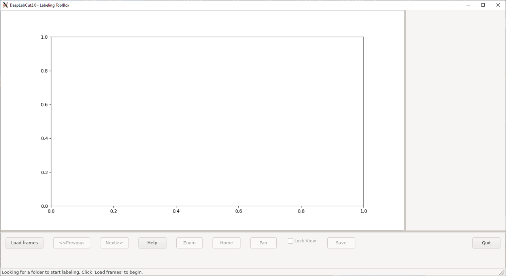

DeepLabCut is an open source toolbox that builds on a state-of-the-art animal pose estimation algorithm. It allows training of a deep neural network by using limited training data to precisely track user-defined features, so that the human labeling accuracy will be matched.
The DeepLabCut application installed on Biowulf is supposed to be run using GPU. As the first step, please allocate an interactive session:
Interactive use of DeepLabCut via the GUI requires a
graphical X11 connection.
Both NX and MobaXterm work well for Windows users,
while XQuartz works well for Mac users.
[user@biowulf]$ sinteractive --gres=gpu:p100:1,lscratch:10 --mem=20g -c14 [user@cn4469 ~]$ module load DeepLabCut/2.2.2 [+] Loading singularity 3.10.0 on cn3063 [+] Loading CUDA Toolkit 11.2.2 ... [+] Loading cuDNN/8.1.0.77/CUDA-11.2.2 libraries... [+] Loading DeepLabCut 2.2.2Clone the DeepLabCut GitHub repository, which contains some examples:
[user@cn4469 user]$ mkdir -p /data/$USER/DLC && cd /data/$USER/DLC [user@cn4469 user]$ cp -r $DLC_MODEL/pretrained . [user@cn4469 user]$ git clone https://github.com/AlexEMG/DeepLabCut [user@cn4469 user]$ cd DeepLabCutCheckout the version with specific tag corresponding to the version of the module you loaded:
[user@cn4469 user]$ git checkout tags/v2.2.2 ... HEAD is now at 2f5d328... DLC 2.2.2The repository contains several videos:
[user@cn4469 ~]$ ls examples/*/videos/* examples/openfield-Pranav-2018-10-30/videos/m3v1mp4.mp4 examples/Reaching-Mackenzie-2018-08-30/videos/MovieS2_Perturbation_noLaser_compressed.avi examples/Reaching-Mackenzie-2018-08-30/videos/reachingvideo1.aviUse these data in an interactive python session:
[user@cn4469 ~]$ ipython
Python 3.8.10 (default, Jun 22 2022, 20:18:18)
Type 'copyright', 'credits' or 'license' for more information
IPython 8.4.0 -- An enhanced Interactive Python. Type '?' for help.
In [1]: import deeplabcut
In [2]: config_path = deeplabcut.create_new_project("MyFirstProject", "Me", ["examples/Reaching-Mackenzie-2018-08-30/videos/MovieS2_Perturbation_noLaser_compressed.avi", "examples/Reaching-Mackenzie-2018-08-30/videos/reachingvideo1.avi"], '.', copy_videos=True)
Created "/gpfs/gsfs7/users/user/DeepLabCut/test_dir/DeepLabCut/MyFirstProject-Me-2022-08-31/videos"
Created "/gpfs/gsfs7/users/user/DeepLabCut/test_dir/DeepLabCut/MyFirstProject-Me-2022-08-31/labeled-data"
Created "/gpfs/gsfs7/users/user/DeepLabCut/test_dir/DeepLabCut/MyFirstProject-Me-2022-08-31/training-datasets"
Created "/gpfs/gsfs7/users/user/DeepLabCut/test_dir/DeepLabCut/MyFirstProject-Me-2022-08-31/dlc-models"
Copying the videos
...
A new project with name MyFirstProject-Me-2022-08-31 is created at /gpfs/gsfs7/users/user/DeepLabCut/test_dir/DeepLabCut and a configurable file (config.yaml) is stored there. Change the parameters in this file to adapt to your project's needs.
Once you have changed the configuration file, use the function 'extract_frames' to select frames for labeling.
. [OPTIONAL] Use the function 'add_new_videos' to add new videos to your project (at any stage).
In [3]: deeplabcut.extract_frames(config_path,"automatic","uniform")
...
Config file read successfully.
...
Extracting frames based on uniform ...
Uniformly extracting of frames from 0.0 seconds to 8.53 seconds.
Frames were selected.
You can now label the frames using the function 'label_frames' (if you extracted enough frames for all videos).
In [4]: deeplabcut.label_frames(config_path)

In [5]: quit() [user@cn4469 ~]$ exit salloc.exe: Relinquishing job allocation 46116226
[user@biowulf]$ sinteractive --gres=gpu:p100:1,lscratch:10 --mem=20g -c14 [user@cn4469 ~]$ module load DeepLabCut/2.3.4 [+] Loading singularity 3.10.5 on cn4469 [+] Loading DeepLabCut 2.3.4
[user@cn4469 user]$ mkdir -p /data/$USER/DLC && cd /data/$USER/DLC [user@cn4469 user]$ cp -r $DLC_MODEL/pretrained .
[user@cn4469]$ git clone https://github.com/AlexEMG/DeepLabCut [user@cn4469]$ cd DeepLabCut/examplesTest run in a terminal:
[user@cn4469]$ python-DLC testscript.py [user@cn4469]$ python-DLC testscript_multianimal.py
python-DLC -m "deeplabcut"
vglrun python-DLC -m "deeplabcut"